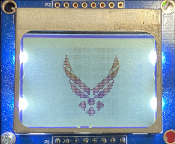

🔬 Lab 5 Software Design#
📌 Objectives#
Students should be able to write logic, conditionals, and loops in C.
Students should be able to write functions with input and output parameters in C.
Students should be able to use debugging tools for C, such as Step-In, Step-Out, and Step-Next.
Note
The only way to learn a new programming language is by writing programs in it. -Dennis Ritchie (inventor of C programming language)
📜 Synopsis#
The objective of this lab is to interface a liquid crystal display (LCD) to the microcontroller and use it to output characters and numbers. The Nokia 5110 LCD shown below is a monocrhome display that is 84 pixels wide by 48 pixels high.
{kind=link}
Each character on the LCD is defined by a 5 pixel wide by 8 pixel high image. You can see the font table as a constant array called ASCII inside Nokia5110 .c. For example, the letter ‘7’ is defined as 0x01, 0x71, 0x09, 0x05, 0x03. This 40-bit value creates the image shown below on the display. The 0x01 is the first column and 0x03 is the last column, with bit 0 on top.
{kind=link}
The Nokia5110_OutChar function inside Nokia5110.c finds the 40-bit value associated with the character passed to the function and displays the character on the LCD.
/**
* Print a character to the Nokia 5110 48x84 LCD. The
* character will be printed at the current cursor position,
* the cursor will automatically be updated, and it will
* wrap to the next row or back to the top if necessary.
* One blank column of pixels will be printed on either side
* of the character for readability. Since characters are 8
* pixels tall and 5 pixels wide, 12 characters fit per row,
* and there are six rows.
* @param data character to print
* @return none
* @note LCD is in default horizontal addressing mode (V = 0)
* @see Nokia5110_Init(), Nokia5110_Clear(), Nokia5110_SetCursor()
* @brief Print a character to the LCD
* @note use Nokia5110_SetCursor to specify position
*/
void Nokia5110_OutChar(char data);
You need to use Nokia5110_SetCursor2 to move the cursor to the desired row and column position on the LCD. The next character printed by Nokia5110_OutChar will be printed here. Read the documentation for Nokia5110_SetCursor2 inside nokia5110.h
Tip
The workspace/inc folder is where the actual .h and .c files are stored and allow us to use these files across multiple projects. The .c files are typically linked within the project folder, so editing the file in the project folder is actually editing the file inside the inc folder. The .h files are not linked.
In this lab, you need to implement the following functions inside Nokia5110.c.
Nokia5110_OutString: Prints a string of characters to Nokia5110 LCDNokia5110_OutUDec: Prints an unsigned number in variable-size format.Nokia5110_OutSDec: Prints a signed number in variable-size format.
Important
Read Nokia5110.h before you start writing code. Putting the declarations in the header enables any code file that includes this header file to call these functions.
💻 Procedure#
Setup#
Connect the LaunchPad to your computer via the provided USB cable.
Open Code Composer Studio (CCS) and select your workspace.
Ensure your Project Explorer is open on the left of the CCS screen.
Run the Program5_1 function to adjust constrast#
Open the
Lab05_SoftwareDesignproject by double-clicking it.Open
Lab05_SoftwareDesignMain.cin theLab05_SoftwareDesignproject.Ensure
Program5_1is uncommented inside themainfunction.Build and debug the program.
It will display the Air Force logo as shown below.
Adjust
CONSTRASTif needed.
{kind=link}
Write the Nokia5110_OutString function#
In CCS open the
incproject by double-clicking it.Open
Nokia5110.hand read the documentation for theNokia5110_OutCharandNokia5110_OutStringfunctions.
Tip
It is crucial to read and comprehend the documentation in header files. Typically, the documentation inside header files is provided to end users, but the contents of source files (*.c) are not usually provided to end users for various reasons, including security. Sometimes, source files are already compiled and end users are not permitted to read them. For example, SPIA3.obj inside Lab05_SoftwareDesign is already compiled and its source code cannot be read. However, you can read its header file, SPIA3.h.
Open the
Lab05_SoftwareDesignproject by double-clicking it.Open
Nokia5110.cin theLab05_SoftwareDesignproject.
Note
You may have noticed that Nokia5110.c is also located inside the inc project. The file is physically located inside the inc folder and the one insde the Lab05_SoftwareDesign project is a link to the file in the inc folder. We need a link, not a copy, of the file because we need the file across multiple projects. If you have a copy of the file, you have to re-copy the file to every project everytime you modify it.
Find the
Nokia5110_OutStringfunction insideNokia5110.c.The input arguemnt,
ptr, of the fucntion is a pointer to a string, i.e.,ptris the address of the first character of the string. A string in C is an array of characters with the Null character (ASCII value 0) at the end. A string in C can be initialized in many different ways. For example,
char str[7] = {'E','C','E','3','8','2','\0'};
char str[] = {'E','C','E','3','8','2','\0'};
char str[10] = "ECE382"; // array size can be > 7. C compilers will put \0 at str[6] ... str[9]
char str[] = "ECE382"; // C compilers will append Null (\0) at the end.
char *str = "ECE382"; // C compilers will append Null (\0) at the end.
The last two methods would be the best to define a string in C. Note that an array is a pointer. In the above example, the str variable from char str[] = "ECE382" holds the address of the first letter, ‘E’, in “ECE382”. So, you can access ‘E’ by *str or str[0] and ‘C’ by *(str+1) or str[1]. The difference between arrays and pointers is that a memory space must be allocated to an array during the compile time (you must define them with a size) whereas no memory space needs to be allocated to a pointer when it is define. If we need to allocate a memory space to a pointer during the runtime, we can use malloc or calloc.
Tip
An array is considered to be the same thing as a pointer to the first item in the array. Therefore, an array is a pointer.
Use a
whileto iterate each character in the string until you see the Null chracter and print the character to the Nokia LCD using theNokia5110_OutCharfunction.Write this function in 2 lines and earn extra bonus points. Hint: Use a pointer with increment (
++) or decrement (--) operators.Use
Program5_2to test your function.Demo your LCD printing “LCD Test”, a small AF logo, letters, a hexadecimal number, and a binary number on the LCD as shown below. Please ignore the two decimal number in the bottom row.

Important
Ensure you understand how to use the Nokia5110_SetCursor2. You will be using the Nokia LCD throughout the semester for high-level debugging, and you are required to use it extensively for the final project.
Write the Nokia5110_OutUDec and Nokia5110_OutSDec functions#
Let’s implemente two functions for the entire integer types: one for unsigned integers and another for signed integers.
Important
Ensure you understand the test programs. You may be asked to write such programs in GRs.
In CCS open the
incproject by double-clicking it.Open
Nokia5110.hand read the documentation for theNokia5110_OutUDecandNokia5110_OutSDecfunctions.You can use these functions to print any signed and unsigned intergers to the Nokia LCD.
Open
Nokia5110.cin theLab05_SoftwareDesignproject and carefully read theNokia_Num2Stringfunction.
Tip
Notice that Nokia_Num2String is a static function as it has the static qualifer. A static function in C is a private (or internal) function that cannot be called externally. The function can be called by other functions defined inside the same file the static function is defined. This is why there is no documentation of this function in the header file.
Now, implement
Nokia5110_OutUDecthat first calls theNokia_Num2Stringfunction.Remember
Nokia_Num2Stringreturnscount, the number of digits in the string.Use
countandmin_lengthto determine the length of the string to print on the LCD to print spaces to the LCD. Remember thatNokia5110_OutU16Decprints right-justified digits.Then print the string inside StrNum in the reverse order.
Use
Program5_3to test this function.Then, implement
Nokia5110_OutSDec, which is very similar toNokia5110_OutUDec. The only difference is that you need to add a negative sign (‘-’) or a space (’ ‘) in front of the integer.
Tip
If a signed 8-bit integer n is -128, int8_t x = -n assigns -128 to x not 128 because the 2’s complement of -128 is -128 in 8-bit signed numbers. If x is an unsigned integer, however, x = -n will assign 128 to x.
Use
Program5_3to test these functions.Demo your LCD displaying numbers as shown below.
Important
You may wonder why we don’t use printf or sprintf for formated outputs. For example,
char* strnum;
uint_16 n = 12345;
sprintf(strnum, "%6d", n); // strnum --> " 12345"
printf and sprintf are macros (not functions) in C and they are extremeley slow. So, they are not used in the world of embedded systems and software.
Tip
Implement and test one function at a time, and then move to the next function. Do not write everything at once and expect they are all working fine.
🚚 Deliverables#
Warning
Your code must be compilable. If your code throws any compile errors, you will get a grade of 0 for the coding part.
Deliverable 1#
[5 Points] Complete the
Nokia5110_OutStringfunction and test it withProgram5_2. You must useNokia5110_OutCharinsideNokia5110_OutString. Demo your LCD printing “LCD Test”, a small AF logo, letters, a hexadecimal number, and a binary number on the LCD.
Deliverable 2#
[5 Points] Complete the
Nokia5110_OutUDecandNokia5110_OutSDecfunctions and test them withProgram5_3. DemoProgram5_3printing signed/unsigned integers on the LCD.
Demo Program5_4 printing signed/unsigned integers on the LCD.
Deliverable 3#
[9.5 Points] Please comment your code and push it to your repository. 0.5 bonus pts: Complete
Nokia5110_OutStringwith only 2 lines - one for while and another for Nokia5110_OutChar.
This lab has been adapted from TI-RSLK MAX Solderless Maze Edition Curriculum